Dimensionality reduction
ANTH 572S
What is dimensionality reduction?
A process which takes multiple to many variables and finds a few variables that explain most of the variation in the raw data sets
Types of dimensionality reduction
- Principal components analysis (PCA)
- Multiple correspondance analysis (MCA)
- Factor analysis (FA)
- Factor analysis of mixed data (FAMD)
Advantages of dimensionality reduction
- Can help deal with multicollinearity in multivariate models
- Creates new variables that can be analyzed in their own right
Dimensionality reduction in R
There are now multiple packages available, including:
- base, implementing PCA
- psych, implementing PCA, FA and MCA
- FactoMineR, implementing PCA, FA, MCA, FAMD
- factoextra, implementing visualization and extraction tools
- Lavaan, primarily EFA and CFA
- ade4, primarily PCA and MCA
Principal component analysis
Primarily well suited to continuous numerical data
In anthropology, used to reduce variation in shape or in bio/molecular data, for deriviing indices such as socioeconomic scales, etc
Multiple correspondance analysis
Suited for nominal data (non-ordered categorical data)
In anthropology, used to summarize artifact or site attributes
Factor analysis
Can be used with different types of variables including numerical, binary, ordinal
Typically used when there is a latent variable or trait that we are seeking to retrieve . . .
Primarily used in psychometrics, but can also be used for scales in cross-cultural research
Factor analysis of mixed data
An extension of FA, which roughly corresponds to a combination of PCA with MCA
In anthropology, used a bit for site/feature analysis, could also be used for socioeconomic scales
Principles of data reduction
Shared principles between data reduction methods
Dimensionality reduction is achieved by attempting to explain variation in the variables
Specifically, correlation matrices are produced and variables are produced to summarize patterns in the correlations.
The specific method used to summarize the correlation between the variables of interest is what sets apart different “flavours” of dimensionality reduction
Principal component analysis
Principal component analysis
PCA is achieved through rotation of the data in multidimensional space, fitting axes (components) which minimize the orthogonal distance between the individuals and the component.
Once the first best-fit component is worked out, the next best fit component (orthogonal) is fit.
Minimizing orthogonal distance

Maximizing variation along the PCs

Principle components in 3D space

Data handled in PCA
PCA is meant to handle continuous data, but people use it for ordinal regularly, and even for nominal data types
Numeric data, can be dichotomous, can be dummy-coded categorical data
Variable scaling
Because PCA attempts to explain variation in a dataset, the scales of the variables matter. For example, if you have two variables, one on the cm scale and one on the mm scale, the variable on the mm scale will have higher variance and dominate your PCA
It’s important to center and scale your variables. Most packages do this automatically, but you can do it manually if you like
Variable scaling
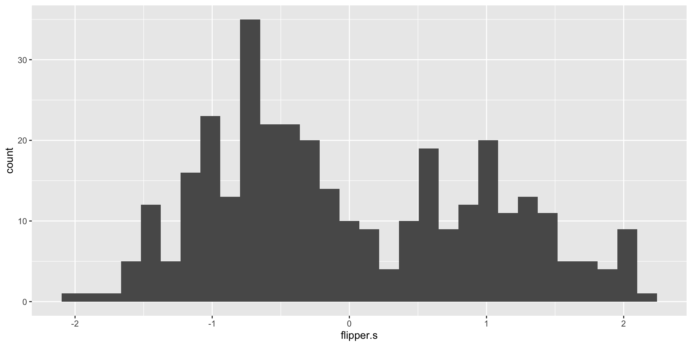Results - Eigenvectors and eigenvalues
Eigenvectors are the lines drawn through the data. Eigenvectors express the direction of the principal component and the correlation of the PC with the original data.
Eigenvalues express the amount of variation captured by each PC - the higher the eigenvalue, the more variance it explains
A brief video
An example: summarizing variation in body shape in the palmerpenguins dataset
# A tibble: 6 × 8
species island bill_length_mm bill_depth_mm flipper_length_mm body_mass_g
<fct> <fct> <dbl> <dbl> <int> <int>
1 Adelie Torgersen 39.1 18.7 181 3750
2 Adelie Torgersen 39.5 17.4 186 3800
3 Adelie Torgersen 40.3 18 195 3250
4 Adelie Torgersen NA NA NA NA
5 Adelie Torgersen 36.7 19.3 193 3450
6 Adelie Torgersen 39.3 20.6 190 3650
# ℹ 2 more variables: sex <fct>, year <int>An example: summarizing variation in body shape in the palmerpenguins dataset
Calculating the correlation matrix
For more options see corrplot vignette
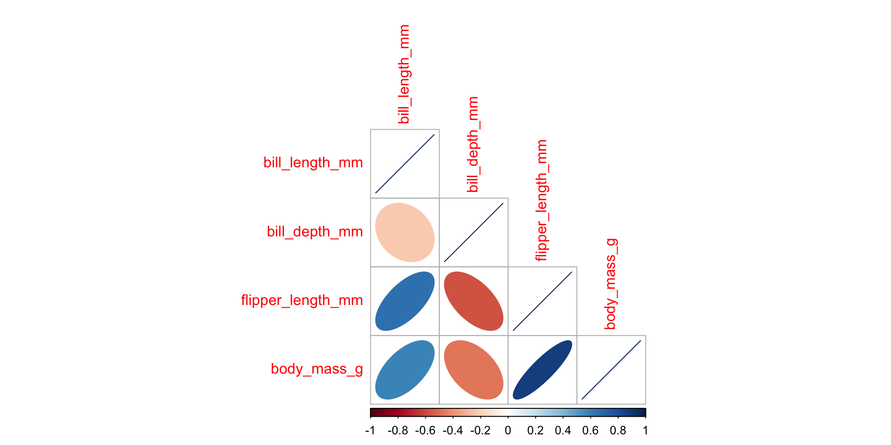Three variable example
Running PCA with FactoMineR
Visualizing the results of PCA with factoextra
Which vars load onto which factors?
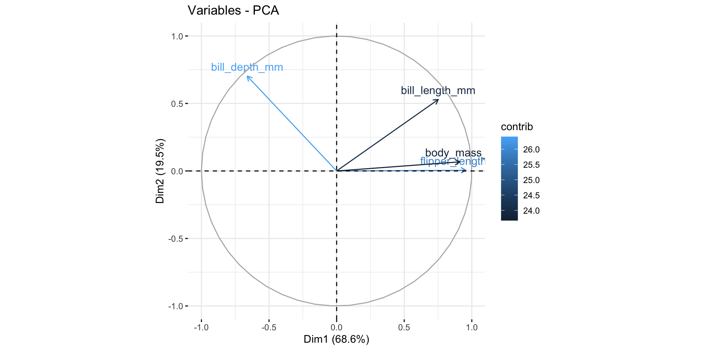Extracting variable loadings
Loadings are the correlation between the original variables and the factors
Dim.1 Dim.2 Dim.3 Dim.4
bill_length_mm 0.7518288 0.52943763 -0.3900969 -0.04768208
bill_depth_mm -0.6611860 0.70230869 0.2585287 0.05252186
flipper_length_mm 0.9557480 0.00510580 0.1433474 0.25684871
body_mass_g 0.9107624 0.06744932 0.3592789 -0.19204478 Dim.1 Dim.2 Dim.3 Dim.4
bill_length_mm 0.5652466 2.803042e-01 0.15217561 0.002273581
bill_depth_mm 0.4371669 4.932375e-01 0.06683710 0.002758546
flipper_length_mm 0.9134542 2.606919e-05 0.02054847 0.065971260
body_mass_g 0.8294881 4.549411e-03 0.12908133 0.036881196Visualizing the results of PCA with factoextra
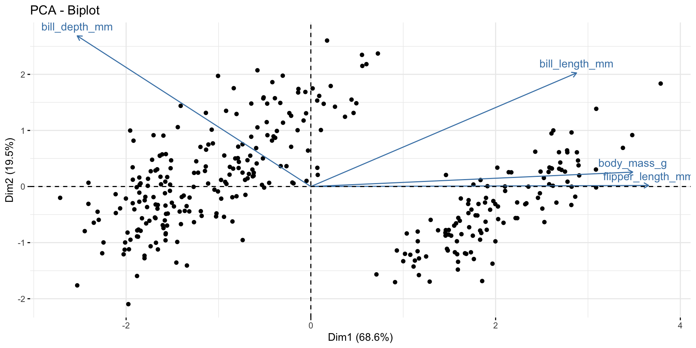Visualizing the results of PCA with factoextra
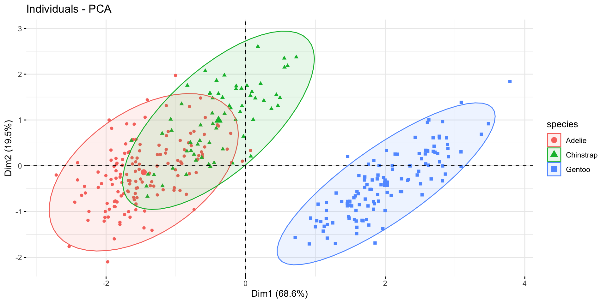Visualizing the results of PCA with factoextra
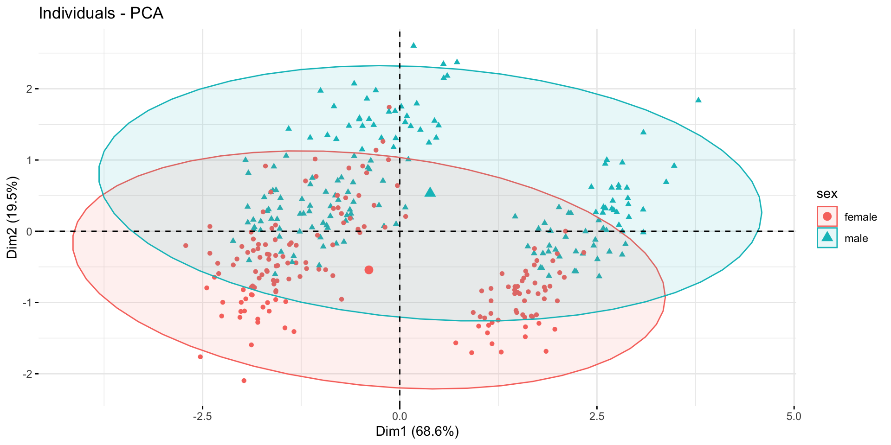How many PCs to retain?
Generally, two competing methods for deciding how many factors/components to retain:
- Eigenvalues
- Scree plot
Retaining PCs based on eigenvalues
Recommendation is that you only keep factors with eigenvalues > 1. Eigenvalue = 1 suggests that a PC explains as much variation as a raw variable.
Retaining PCs based on scree plots
Scree plots visualize the percentage of variance explained. You’re looking here for an “elbow” indicating a change in the direction of the decline of additional variance explained
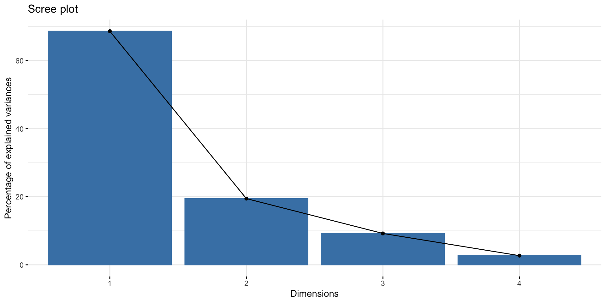Visualizing your options prior to formalizing a model
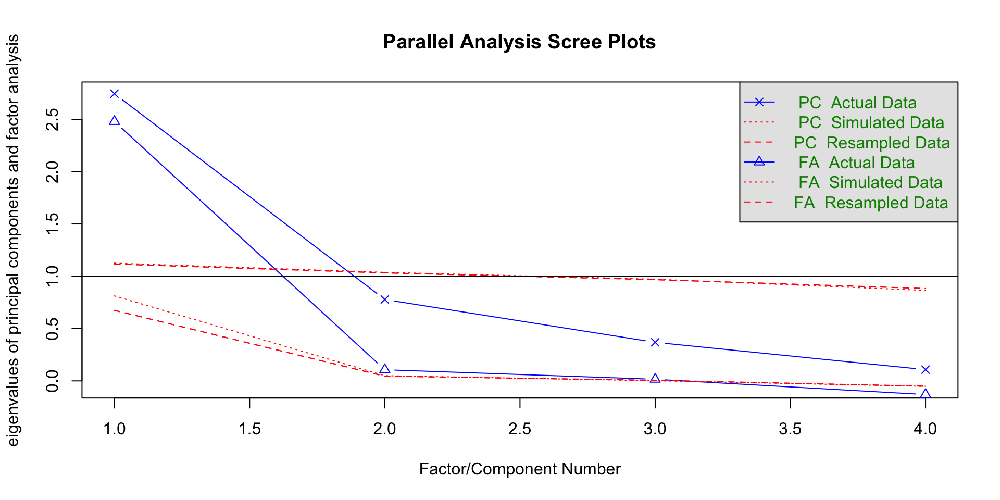Extracting individual scores from the PCA model
Dim.1 Dim.2 Dim.3 Dim.4
1 -1.853593 0.03206938 0.23490166 -0.5283966
2 -1.316254 -0.44352677 0.02747008 -0.4017266
3 -1.376605 -0.16123048 -0.18968926 0.5286619
4 -1.885288 -0.01235124 0.62887269 0.4728932
5 -1.919981 0.81759813 0.70105139 0.1964165
6 -1.773020 -0.36622296 -0.02846046 -0.5053686Make your own PC plot

Your turn
Factor analysis
Factor analysis as a variation on PCA
Factor analysis is similar to PCA, and the principles we learned in PCA apply to FA as well.
However, FA is different from PCA in that it assumes that there is a latent unobserved variable (or several) that drives variation across measured variables
FA attempts to maximally explain commonality rather than maximally explain variance
Factor analysis as a variation on PCA
Because FA tries to estimate a latent variable:
1. In a full workflow, FA is broken down into EFA and CFA
2. Solutions can be extended to estimate factor scores for new individuals
EFA versus CFA
Goal of EFA is to derive factors - we start with the data and we summarize it with FA
The goal of CFA is to confirm whether the factors explain variation, typically in another dataset. We start with the factors, and try to match them back onto our new dataset.
If you’re going to run FA in your analyses, you will likely do EFA only
An example with the psych package
Polychoric correlation matrix
Polychoric correlation matrices allow you to account for ordinal variables

Polychoric versus plain correlation matrices
Taking into account the structure of the data enables us to better detect correlation
Exploring potential solutions
Only 1 factor has eigenvalues > 1, which suggests that the data is adequately summarized by a single factor
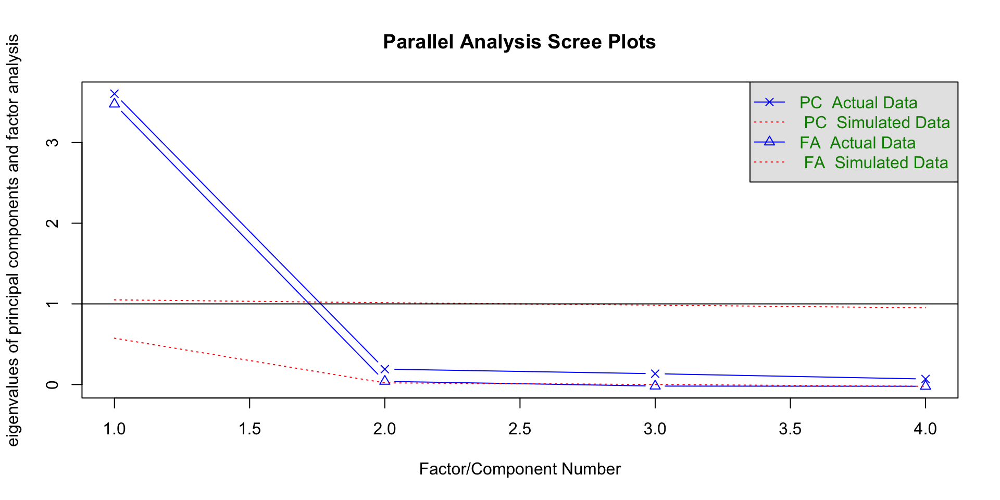Running the model
Set the nfactor based on the results of the scree plot analysis and specify the type of correlation to be undertaken
Plot the loadings for the model
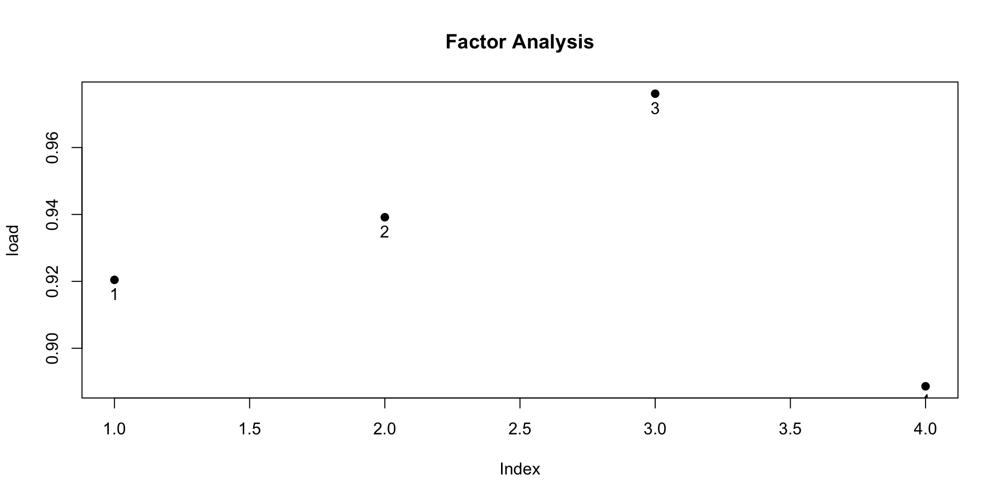Visualizing the relationship between the factors and the variables
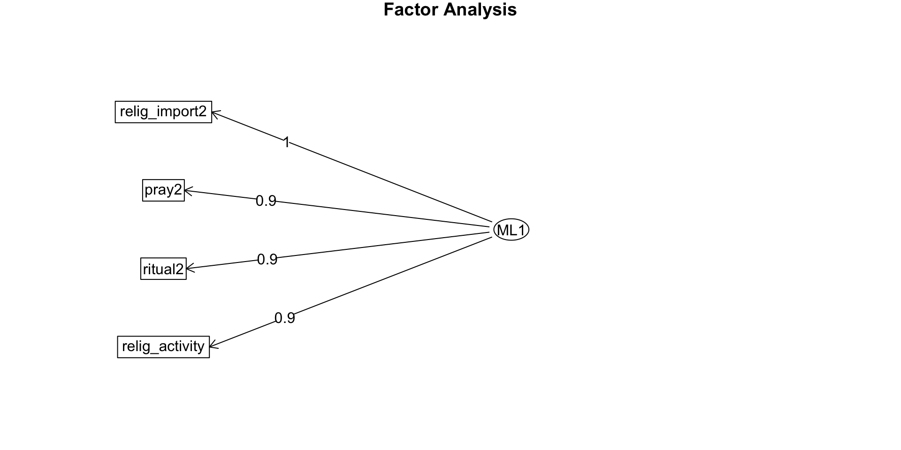Visualizing the relationship between the factors and the variables
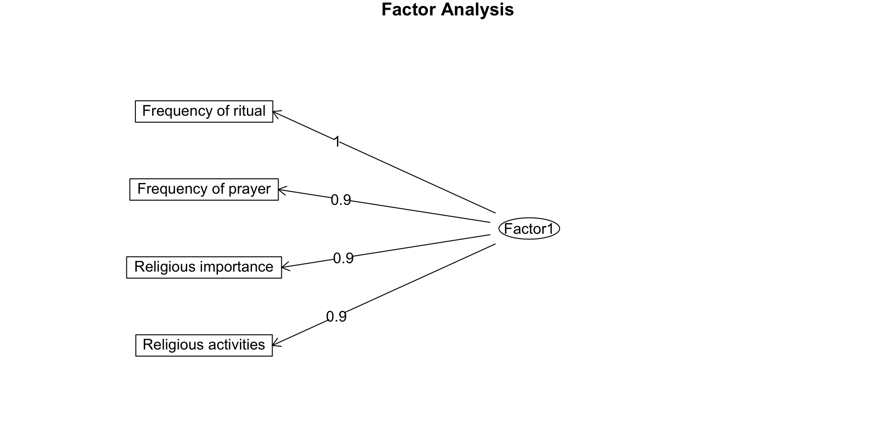Factor tuning and internal consistency with Cronbach’s alpha
Reliability analysis
Call: alpha(x = poly_rho)
raw_alpha std.alpha G6(smc) average_r S/N median_r
0.96 0.96 0.96 0.87 26 0.86
95% confidence boundaries
lower alpha upper
Feldt 0.81 0.96 1
Reliability if an item is dropped:
raw_alpha std.alpha G6(smc) average_r S/N var.r med.r
ritual2 0.95 0.95 0.94 0.87 20 0.00260 0.86
pray2 0.95 0.95 0.93 0.87 20 0.00046 0.86
relig_import2 0.94 0.94 0.92 0.84 16 0.00037 0.85
relig_activity 0.96 0.96 0.95 0.89 24 0.00116 0.89
Item statistics
r r.cor r.drop
ritual2 0.95 0.93 0.91
pray2 0.95 0.93 0.91
relig_import2 0.97 0.96 0.94
relig_activity 0.93 0.89 0.88Extracting individual scores
relig_fitted <- religion %>%
select(age, country, ritual2, pray2, relig_import2, relig_activity, relig, births_num)
relig_fitted$scores <- factor.scores(relig, poly_model)$scores
factor.scores(relig, poly_model)$scores
Factor1
p_1 -0.14539759
p_3 -0.61286216
p_4 -0.80962961
p_5 2.03815021
p_6 -0.80962961
p_7 -0.61286216
p_8 0.24813731
p_9 2.03815021
p_10 0.41482309
p_11 1.31657642
p_12 -0.80962961
p_13 -0.80962961
p_14 -0.14539759
p_15 2.03815021
p_16 0.42016262
p_17 0.66893231
p_18 2.03815021
p_19 -0.80962961
p_21 -0.34216504
p_22 0.71560188
p_23 -0.21932727
p_24 1.22382031
p_25 1.17715075
p_26 -0.80962961
p_27 -0.80962961
p_28 -0.14539759
p_29 2.03815021
p_30 -0.14539759
p_31 -0.34216504
p_32 0.32206698
p_33 -0.80962961
p_34 1.78404100
p_35 -0.80962961
p_36 0.41482309
p_37 -0.34216504
p_39 1.78404100
p_40 0.10871163
p_41 0.12529954
p_42 -0.14539759
p_43 -0.80962961
p_44 2.03815021
p_45 1.47792953
p_46 -0.80962961
p_47 1.02705287
p_48 -0.14539759
p_49 2.03815021
p_50 1.84138277
p_51 -0.80962961
p_52 -0.61286216
p_53 1.39050610
p_54 -0.34216504
p_55 0.24813731
p_56 0.71560188
p_57 -0.14539759
p_58 -0.80962961
p_59 -0.34216504
p_60 2.03815021
p_61 -0.30141117
p_62 0.80835799
p_63 2.03815021
p_64 0.66893231
p_65 1.17715075
p_66 -0.80962961
p_67 -0.55552039
p_69 -0.80962961
p_70 -0.14539759
p_71 -0.80962961
p_72 2.03815021
p_73 -0.80962961
p_74 -0.80962961
p_75 0.24813731
p_76 0.81369751
p_77 -0.14539759
p_78 -0.80962961
p_79 -0.34216504
p_80 -0.80962961
p_81 -0.61286216
p_82 -0.80962961
p_84 -0.80962961
p_85 -0.14539759
p_86 -0.80962961
p_87 -0.80962961
p_88 0.36282085
p_89 -0.61286216
p_90 0.71560188
p_92 -0.80962961
p_93 -0.14539759
p_94 -0.34216504
p_95 -0.80962961
p_96 2.03815021
p_97 -0.80962961
p_98 -0.80962961
p_100 0.24813731
p_101 -0.14539759
p_102 1.47792953
p_103 -0.14539759
p_104 -0.80962961
p_105 -0.61286216
p_107 -0.14539759
p_109 1.78404100
p_110 1.58727355
p_111 0.86569976
p_112 -0.80962961
p_113 -0.14539759
p_114 2.03815021
p_115 0.80835799
p_116 -0.34216504
p_118 0.45557696
p_119 1.78404100
p_120 0.92304153
p_121 -0.80962961
p_122 -0.80962961
p_123 1.78404100
p_124 0.88228767
p_125 1.44784787
p_126 0.41482309
p_127 -0.80962961
p_128 -0.80962961
p_129 -0.80962961
p_130 -0.80962961
p_131 0.57617620
p_132 0.96971110
p_133 0.83028542
p_134 1.58727355
p_136 -0.61286216
p_138 -0.14539759
p_139 -0.41609471
p_140 -0.80962961
p_141 -0.80962961
p_142 1.57068564
p_144 -0.80962961
p_145 -0.61286216
p_146 -0.80962961
p_147 1.07905511
p_148 1.52993178
p_149 -0.24940893
p_150 0.71560188
p_151 -0.80962961
p_153 2.03815021
p_154 1.37391820
p_155 0.05136986
p_156 0.61159054
p_157 1.84138277
p_158 -0.24940893
p_159 2.03815021
p_160 -0.80962961
p_161 1.84138277
p_162 0.92304153
p_163 2.03815021
p_164 -0.80962961
p_165 0.05136986
p_166 2.03815021
p_167 -0.80962961
p_168 1.27582256
p_169 -0.24940893
p_170 -0.80962961
p_171 -0.80962961
p_172 1.84138277
p_173 -0.61286216
p_174 1.27582256
p_175 0.51883443
p_176 1.28116208
p_177 -0.14539759
p_178 2.03815021
p_179 0.36282085
p_180 2.03815021
p_181 -0.80962961
p_182 -0.34216504
p_183 -0.80962961
p_184 0.75635574
p_185 1.57068564
p_186 2.40160345
p_187 -0.14539759
p_188 1.84138277
p_189 -0.80962961
p_190 -0.80962961
p_191 -0.14539759
p_192 -0.61286216
p_193 0.51883443
p_194 0.21805565
p_195 1.11980898
p_197 0.41482309
p_198 0.61693007
p_199 0.41482309
p_200 2.03815021
p_201 -0.14539759
p_202 -0.80962961
p_203 -0.80962961
p_204 -0.80962961
p_205 -0.80962961
p_207 -0.08805582
p_208 -0.80962961
p_209 -0.80962961
p_210 1.58727355
p_211 1.57068564
p_212 0.05136986
p_213 -0.80962961
p_214 -0.80962961
p_216 -0.21932727
p_217 -0.80962961
p_218 -0.08805582
p_219 -0.61286216
p_220 1.28116208
p_221 -0.80962961
p_222 1.58727355
p_223 -0.80962961
p_224 -0.80962961
p_225 -0.80962961
p_226 -0.80962961
p_227 -0.80962961
p_228 -0.61286216
p_229 -0.80962961
p_230 -0.80962961
p_231 1.47792953
p_233 -0.80962961
p_235 -0.14539759
p_236 -0.80962961
p_237 -0.80962961
p_238 2.59837090
p_239 1.17715075
p_240 -0.80962961
p_242 -0.80962961
p_243 1.47792953
p_244 -0.80962961
p_245 -0.80962961
p_246 -0.80962961
p_247 -0.80962961
p_248 -0.34216504
p_249 0.86569976
p_250 -0.80962961
p_251 -0.80962961
p_252 -0.80962961
p_253 -0.80962961
p_254 -0.80962961
p_255 -0.80962961
p_256 1.78404100
p_257 0.24813731
p_258 -0.80962961
p_259 0.83028542
p_260 -0.80962961
p_262 -0.80962961
p_263 -0.80962961
p_264 -0.80962961
p_265 -0.80962961
p_266 -0.80962961
p_267 -0.80962961
p_268 -0.80962961
p_269 -0.80962961
p_270 -0.80962961
p_272 -0.80962961
p_273 -0.80962961
p_274 0.50224652
p_275 -0.80962961
p_276 0.16605340
p_277 -0.80962961
p_279 -0.80962961
p_280 -0.80962961
p_281 -0.80962961
p_282 -0.80962961
p_283 -0.80962961
p_284 -0.80962961
p_285 1.47792953
p_286 -0.55552039
p_287 -0.80962961
p_288 -0.80962961
p_289 -0.80962961
p_290 -0.80962961
p_291 -0.80962961
p_292 -0.80962961
p_293 1.47792953
p_294 -0.80962961
p_295 -0.80962961
p_296 -0.61286216
p_297 -0.61286216
p_298 -0.80962961
p_299 -0.14539759
p_300 -0.80962961
p_301 1.07905511
p_302 -0.80962961
p_303 -0.80962961
p_305 -0.80962961
p_306 -0.80962961
p_307 1.47792953
p_308 -0.80962961
p_309 -0.80962961
p_310 -0.80962961
p_311 0.24813731
p_312 -0.80962961
p_313 -0.61286216
p_314 -0.80962961
p_315 -0.80962961
p_316 -0.80962961
p_317 -0.80962961
p_318 -0.80962961
p_319 -0.80962961
p_320 -0.80962961
p_321 0.92304153
p_322 1.78404100
p_323 -0.80962961
p_324 -0.80962961
p_325 -0.80962961
p_326 -0.80962961
p_327 -0.55552039
p_328 -0.80962961
p_329 -0.80962961
p_330 -0.80962961
p_331 -0.80962961
p_332 -0.80962961
p_333 -0.80962961
p_334 -0.80962961
p_335 -0.80962961
p_336 -0.80962961
p_337 -0.80962961
p_339 -0.80962961
p_340 -0.80962961
p_341 -0.80962961
p_342 -0.80962961
p_343 -0.61286216
p_344 0.92304153
p_345 -0.80962961
p_346 -0.80962961
p_347 -0.80962961
p_348 -0.80962961
p_349 -0.80962961
p_350 -0.80962961
p_351 -0.80962961
p_352 -0.80962961
p_353 -0.80962961
p_354 -0.41609471
p_355 1.11980898
p_356 -0.80962961
p_358 -0.80962961
p_359 -0.80962961
p_360 -0.61286216
p_361 -0.80962961
p_362 -0.80962961
p_363 -0.80962961
p_364 -0.80962961
p_365 1.52993178
p_366 1.33316433
p_367 -0.80962961
p_368 -0.80962961
p_369 0.71560188
p_370 -0.80962961
p_372 -0.80962961
p_373 -0.80962961
p_374 -0.80962961
p_375 -0.80962961
p_376 -0.80962961
p_377 -0.80962961
p_379 -0.80962961
p_380 -0.80962961
p_381 -0.34216504
p_382 -0.80962961
p_383 -0.80962961
p_384 -0.61286216
p_385 0.61159054
p_386 -0.80962961
p_387 -0.80962961
p_388 -0.80962961
p_389 -0.80962961
p_390 -0.80962961
p_391 -0.80962961
p_393 -0.80962961
p_394 -0.14539759
p_395 -0.61286216
p_396 -0.80962961
p_397 -0.80962961
p_398 -0.80962961
p_399 -0.80962961
p_400 -0.80962961
p_401 -0.80962961
p_402 -0.80962961
p_403 1.27582256
p_404 -0.80962961
p_405 -0.80962961
p_406 -0.80962961
p_408 -0.80962961
p_409 -0.24940893
p_410 -0.80962961
p_411 -0.80962961
p_412 -0.80962961
p_413 -0.80962961
p_414 -0.61286216
p_415 -0.80962961
p_416 -0.80962961
p_417 -0.34216504
p_419 -0.61286216
p_420 -0.80962961
p_421 -0.80962961
p_423 -0.80962961
p_424 -0.80962961
p_426 -0.80962961
p_428 -0.14539759
p_429 -0.14539759
p_430 -0.80962961
p_431 -0.80962961
p_432 0.61159054
p_433 -0.80962961
p_434 -0.80962961
p_435 -0.80962961
p_436 -0.80962961
p_437 -0.80962961
p_438 -0.80962961
p_439 -0.80962961
p_440 -0.80962961
p_441 0.72627408
p_442 2.03815021
p_443 -0.80962961
p_444 -0.34216504
p_445 0.24813731
p_446 -0.80962961
p_447 0.41482309
p_448 -0.80962961
p_449 -0.80962961
p_450 -0.61286216
p_451 -0.80962961
p_453 -0.80962961
p_454 -0.80962961
p_455 2.03815021
p_456 -0.80962961
p_457 1.47792953
p_458 -0.80962961
p_462 -0.80962961
p_463 -0.80962961
p_464 -0.80962961
p_465 -0.80962961
p_466 -0.80962961
p_467 -0.80962961
p_468 -0.80962961
p_469 -0.80962961
p_470 -0.80962961
p_471 0.88228767
p_472 1.52993178
p_473 1.78404100
p_474 -0.80962961
p_475 0.36282085
p_476 -0.14539759
p_477 -0.80962961
p_478 0.71560188
p_479 -0.80962961
p_480 -0.80962961
p_482 -0.61286216
p_483 -0.80962961
p_485 -0.80962961
p_486 -0.61286216
p_487 -0.34216504
p_488 -0.80962961
p_489 -0.80962961
p_490 -0.80962961
p_491 -0.80962961
p_492 0.36282085
p_493 -0.80962961
p_494 2.03815021
p_495 -0.80962961
p_496 1.17715075
p_497 -0.80962961
p_498 -0.80962961
p_499 -0.80962961
p_500 -0.80962961
p_501 -0.80962961
p_502 -0.80962961
p_503 -0.80962961
p_504 -0.80962961
p_505 -0.21932727
p_506 -0.80962961
p_507 1.27582256
p_508 -0.80962961
p_509 -0.80962961
p_510 -0.80962961
p_511 0.36282085
p_512 -0.61286216
p_513 -0.80962961
p_515 -0.80962961
p_516 -0.80962961
p_517 -0.80962961
p_518 -0.14539759
p_519 -0.80962961
p_520 -0.80962961
p_521 -0.05264148
p_522 -0.80962961
p_523 -0.80962961
p_524 -0.80962961
p_525 -0.80962961
p_526 -0.80962961
p_527 -0.80962961
p_528 -0.80962961
p_529 -0.80962961
p_530 -0.80962961
p_532 -0.80962961
p_533 -0.80962961
p_534 -0.14539759
p_535 -0.80962961
p_536 -0.80962961
p_537 -0.80962961
p_538 -0.80962961
p_539 -0.80962961
p_540 -0.80962961
p_541 -0.05264148
p_542 -0.80962961
p_544 -0.80962961
p_545 -0.80962961
p_546 -0.14539759
p_547 -0.80962961
p_548 -0.80962961
p_549 -0.80962961
p_550 -0.80962961
p_551 1.28116208
p_552 -0.80962961
p_553 -0.80962961
p_554 1.58727355
p_556 2.03815021
p_558 -0.80962961
p_559 1.57068564
p_560 -0.80962961
p_561 -0.80962961
p_562 -0.80962961
p_563 -0.80962961
p_564 -0.80962961
p_565 -0.80962961
p_566 -0.80962961
p_567 -0.14539759
p_568 -0.80962961
p_569 -0.80962961
p_571 -0.80962961
p_572 -0.80962961
p_573 -0.80962961
p_574 -0.80962961
p_575 -0.14539759
p_577 -0.80962961
p_578 -0.80962961
p_579 -0.80962961
p_580 -0.80962961
p_581 -0.80962961
p_582 -0.80962961
p_583 -0.80962961
p_584 -0.80962961
p_585 -0.80962961
p_586 0.98038330
p_587 -0.80962961
p_588 -0.80962961
p_589 -0.80962961
p_590 -0.80962961
p_591 -0.80962961
p_592 -0.80962961
p_593 -0.80962961
p_594 -0.80962961
p_595 -0.80962961
p_596 -0.80962961
p_597 -0.14539759
p_598 -0.80962961
p_599 2.03815021
p_600 -0.80962961
p_601 -0.80962961
p_603 -0.80962961
p_604 -0.61286216
p_605 -0.80962961
p_606 -0.80962961
p_607 -0.80962961
p_608 0.47216486
p_609 2.03815021
p_610 -0.80962961
p_611 -0.80962961
p_612 -0.14539759
p_613 0.50224652
p_614 0.66893231
p_615 -0.80962961
p_616 -0.14539759
p_617 0.66893231
p_618 -0.61286216
p_619 -0.61286216
p_620 -0.80962961
p_621 -0.80962961
p_623 0.24813731
p_624 -0.80962961
p_625 -0.61286216
p_626 0.96971110
p_627 -0.80962961
p_628 -0.80962961
p_629 -0.80962961
p_630 -0.80962961
p_631 -0.80962961
p_632 -0.80962961
p_633 -0.30141117
p_634 -0.61286216
p_635 2.03815021
p_636 0.05136986
p_638 -0.80962961
p_639 -0.80962961
p_640 -0.80962961
p_641 -0.80962961
p_642 -0.80962961
p_643 -0.34216504
p_644 -0.61286216
p_645 -0.80962961
p_646 -0.14539759
p_647 -0.80962961
p_648 -0.80962961
p_649 -0.80962961
p_650 -0.80962961
p_652 -0.80962961
p_653 1.17715075
p_656 2.03815021
p_657 -0.61286216
p_658 -0.80962961
p_659 1.11980898
p_660 -0.80962961
p_661 -0.10464372
p_662 -0.80962961
p_663 -0.80962961
p_664 -0.80962961
p_665 0.32206698
p_666 -0.61286216
p_667 -0.14539759
p_668 -0.80962961
p_669 -0.80962961
p_670 -0.80962961
p_671 -0.61286216
p_672 -0.80962961
p_673 -0.80962961
p_674 -0.80962961
p_675 1.08439464
p_676 -0.80962961
p_677 -0.80962961
p_678 -0.80962961
p_679 -0.80962961
p_680 -0.61286216
p_681 -0.80962961
p_682 -0.80962961
p_683 -0.80962961
p_684 1.84138277
p_685 2.03815021
p_687 -0.80962961
p_688 -0.80962961
p_689 -0.61286216
p_690 -0.80962961
p_691 -0.80962961
p_692 -0.80962961
p_693 -0.80962961
p_694 -0.80962961
p_695 -0.80962961
p_696 -0.61286216
p_697 -0.80962961
p_698 -0.80962961
p_702 0.32206698
p_703 -0.80962961
p_704 -0.80962961
p_705 -0.80962961
p_706 -0.80962961
p_707 -0.80962961
p_708 -0.80962961
p_709 -0.80962961
p_710 0.75635574
p_711 -0.80962961
p_712 -0.80962961
p_713 -0.80962961
p_715 -0.80962961
p_716 -0.80962961
p_717 -0.80962961
p_718 1.07905511
p_719 -0.80962961
p_720 -0.80962961
p_721 -0.80962961
p_722 -0.80962961
p_723 -0.80962961
p_725 2.03815021
p_726 -0.80962961
p_727 -0.80962961
p_728 -0.80962961
p_729 -0.80962961
p_730 1.52993178
p_731 -0.80962961
p_732 -0.80962961
p_733 0.05136986
p_734 -0.80962961
p_735 -0.80962961
p_736 0.36282085
p_738 -0.34216504
p_739 -0.41609471
p_740 -0.80962961
p_742 -0.80962961
p_743 -0.14539759
p_744 -0.80962961
p_745 0.05136986
p_746 -0.05264148
p_747 -0.34216504
p_748 -0.80962961
p_749 0.41482309
p_750 2.03815021
p_751 -0.80962961
p_752 -0.80962961
p_753 -0.80962961
p_754 -0.80962961
p_755 -0.61286216
p_756 -0.80962961
p_757 -0.14539759
p_758 -0.80962961
p_759 -0.80962961
p_760 -0.80962961
p_761 -0.14539759
p_762 -0.80962961
p_764 2.03815021
p_765 -0.80962961
p_766 -0.80962961
p_768 -0.80962961
p_769 -0.80962961
p_770 -0.14539759
p_771 -0.80962961
p_772 -0.80962961
p_773 -0.80962961
p_774 2.03815021
p_775 -0.80962961
p_776 -0.80962961
p_777 -0.80962961
p_778 -0.05264148
p_779 -0.61286216
p_780 -0.61286216
p_781 -0.05264148
p_782 2.03815021
p_783 -0.80962961
p_784 0.41482309
p_785 -0.80962961
p_786 -0.80962961
p_787 -0.80962961
p_788 -0.80962961
p_789 -0.80962961
p_790 -0.80962961
p_791 -0.34216504
p_792 -0.80962961
p_793 -0.80962961
p_795 -0.80962961
p_796 -0.80962961
p_797 -0.14539759
p_798 -0.80962961
p_799 0.16605340
p_800 1.22382031
p_801 1.31657642
p_802 -0.80962961
p_803 -0.61286216
p_804 -0.34216504
p_805 -0.14539759
p_806 -0.80962961
p_807 -0.61286216
p_808 -0.80962961
p_809 -0.80962961
p_810 -0.80962961
p_812 -0.80962961
p_813 -0.80962961
p_814 -0.80962961
p_815 -0.80962961
p_816 1.27582256
p_817 0.36282085
p_818 -0.80962961
p_819 -0.80962961
p_820 -0.80962961
p_822 -0.80962961
p_823 -0.80962961
p_825 -0.80962961
p_826 0.41482309
p_827 -0.80962961
p_828 -0.80962961
p_829 -0.80962961
p_830 -0.80962961
p_831 -0.80962961
p_832 -0.80962961
p_833 -0.80962961
p_834 -0.80962961
p_835 -0.80962961
p_836 -0.80962961
p_837 -0.80962961
p_838 -0.80962961
p_839 0.41482309
p_840 -0.80962961
p_841 -0.80962961
p_842 -0.80962961
p_843 -0.80962961
p_844 2.03815021
p_845 -0.80962961
p_846 -0.80962961
p_847 -0.80962961
p_848 -0.80962961
p_849 0.92304153
p_850 -0.80962961
p_851 -0.80962961
p_852 -0.61286216
p_853 1.52993178
p_855 -0.80962961
p_856 2.03815021
p_857 -0.80962961
p_858 1.01046496
p_859 -0.80962961
p_860 -0.80962961
p_861 -0.80962961
p_862 0.61693007
p_863 -0.80962961
p_864 -0.80962961
p_865 -0.80962961
p_866 -0.80962961
p_867 -0.80962961
p_868 -0.34216504
p_869 -0.80962961
p_870 -0.14539759
p_871 -0.80962961
p_872 -0.80962961
p_873 -0.80962961
p_874 -0.80962961
p_875 -0.80962961
p_876 0.05136986
p_877 -0.80962961
p_878 -0.80962961
p_879 -0.80962961
p_880 0.05136986
p_881 -0.34216504
p_882 0.51883443
p_883 -0.34216504
p_884 -0.34216504
p_885 -0.34216504
p_886 -0.80962961
p_887 0.92304153
p_888 -0.80962961
p_889 -0.80962961
p_890 -0.34216504
p_891 -0.80962961
p_892 -0.80962961
p_893 -0.80962961
p_894 -0.80962961
p_895 -0.80962961
p_896 -0.80962961
p_897 1.57068564
p_898 -0.80962961
p_899 -0.80962961
p_900 -0.80962961
p_901 -0.80962961
p_902 0.05136986
p_903 -0.80962961
p_904 0.42016262
p_905 -0.80962961
p_906 -0.80962961
p_907 -0.80962961
p_910 -0.80962961
p_911 0.61159054
p_912 -0.80962961
p_913 -0.80962961
p_914 -0.80962961
p_915 -0.80962961
p_917 -0.80962961
p_918 -0.80962961
p_919 -0.80962961
p_920 -0.80962961
p_921 -0.80962961
p_922 -0.34216504
p_923 -0.80962961
p_924 -0.80962961
p_925 -0.14539759
p_926 1.07905511
p_927 -0.80962961
p_928 -0.80962961
p_929 -0.80962961
p_930 -0.80962961
p_931 -0.80962961
p_932 1.01046496
p_933 -0.80962961
p_934 -0.80962961
p_935 -0.80962961
p_936 -0.80962961
p_937 -0.34216504
p_938 1.07905511
p_939 -0.80962961
p_940 1.01046496
p_942 -0.80962961
p_943 0.80835799
p_944 -0.80962961
p_945 0.05136986
p_946 -0.80962961
p_947 -0.80962961
p_948 2.03815021
p_949 -0.80962961
p_951 0.10871163
p_952 -0.80962961
p_953 -0.80962961
p_954 -0.14539759
p_955 -0.80962961
p_956 -0.80962961
p_957 -0.80962961
p_958 -0.80962961
p_959 -0.61286216
p_960 0.10871163
p_961 -0.14539759
p_962 0.51883443
p_963 0.41482309
p_964 0.61693007
p_965 -0.14539759
p_966 -0.80962961
p_967 -0.80962961
p_968 -0.80962961
p_969 -0.80962961
p_970 -0.80962961
p_971 -0.80962961
p_972 -0.80962961
p_973 -0.80962961
p_974 -0.80962961
p_975 -0.80962961
p_976 -0.80962961
p_977 -0.80962961
p_978 -0.80962961
p_979 -0.80962961
p_980 -0.80962961
p_981 -0.80962961
p_982 -0.80962961
p_983 -0.80962961
p_984 -0.80962961
p_985 -0.61286216
p_986 -0.80962961
p_987 -0.80962961
p_988 -0.80962961
p_989 -0.41609471
p_991 -0.80962961
p_992 -0.80962961
p_993 -0.80962961
p_995 2.03815021
p_996 0.24813731
p_998 0.05136986
p_999 -0.80962961
p_1000 2.03815021
p_1001 -0.41609471
p_1002 -0.14539759
p_1003 -0.61286216
p_1004 0.71560188
p_1005 -0.80962961
p_1006 2.03815021
p_1007 0.24813731
p_1008 -0.80962961
p_1009 -0.80962961
p_1010 0.81369751
p_1011 0.12529954
p_1012 -0.61286216
p_1013 -0.80962961
p_1014 -0.14539759
p_1015 -0.61286216
p_1016 -0.80962961
p_1017 2.03815021
p_1018 0.05136986
p_1019 0.72627408
p_1020 -0.14539759
p_1021 -0.80962961
p_1022 -0.14539759
p_1023 -0.34216504
p_1024 0.96971110
p_1025 -0.14539759
p_1026 2.03815021
p_1027 2.03815021
p_1028 2.03815021
p_1029 0.32206698
p_1030 0.71560188
p_1031 -0.21932727
p_1033 -0.61286216
p_1034 0.68552022
p_1035 1.64461532
p_1036 2.03815021
p_1037 0.41482309
p_1038 -0.14539759
p_1041 1.27582256
p_1042 -0.80962961
p_1043 2.03815021
p_1044 2.03815021
p_1045 -0.14539759
p_1046 -0.80962961
p_1047 2.03815021
p_1048 -0.80962961
p_1050 2.03815021
p_1051 0.50224652
p_1052 2.03815021
p_1053 2.03815021
p_1054 1.37391820
p_1055 0.51883443
p_1056 1.22382031
p_1057 1.11980898
p_1058 1.27582256
p_1059 0.71560188
p_1060 2.03815021
p_1061 2.40160345
p_1062 2.03815021
p_1063 1.58727355
p_1064 2.03815021
p_1065 1.83604324
p_1066 -0.61286216
p_1067 2.03815021
p_1069 2.03815021
p_1070 0.05136986
p_1071 1.31657642
p_1072 0.36282085
p_1073 -0.34216504
p_1074 2.03815021
p_1075 0.51883443
p_1076 0.32206698
p_1077 -0.14539759
p_1078 0.37940875
p_1079 -0.21932727
p_1080 1.27582256
p_1081 1.64461532
p_1082 0.71560188
p_1083 -0.80962961
p_1085 2.03815021
p_1086 1.84138277
p_1087 -0.80962961
p_1088 0.61159054
p_1089 1.84138277
p_1090 2.03815021
p_1091 2.03815021
p_1092 0.71560188
p_1093 -0.14539759
p_1094 0.05136986
p_1095 -0.80962961
p_1096 1.27582256
p_1097 1.64461532
p_1098 -0.80962961
p_1099 0.41482309
p_1100 1.57068564
p_1101 2.03815021
p_1102 0.61159054
p_1104 2.03815021
p_1106 1.84138277
p_1107 2.03815021
p_1109 2.59837090
p_1111 1.37391820
p_1112 0.41482309
p_1113 1.57068564
p_1114 0.36282085
p_1116 1.84138277
p_1117 2.03815021
p_1118 2.03815021
p_1120 2.03815021
p_1121 2.03815021
p_1122 2.03815021
p_1125 2.03815021
p_1126 -0.21932727
p_1128 1.02705287
p_1129 2.03815021
p_1130 0.32206698
p_1131 2.03815021
p_1132 0.71560188
p_1133 2.03815021
p_1134 0.61159054
p_1135 -0.80962961
p_1136 0.24813731
p_1137 0.71560188
p_1138 1.57068564
p_1139 0.71560188
p_1140 1.57068564
p_1143 2.03815021
p_1144 1.17181122
p_1145 1.84138277
p_1146 1.78404100
p_1149 0.61159054
p_1150 -0.80962961
p_1152 2.03815021
p_1153 0.05136986
p_1154 -0.80962961
p_1155 0.10871163
p_1156 -0.80962961
p_1157 2.03815021
p_1158 -0.80962961
p_1159 -0.34216504
p_1160 -0.14539759
p_1161 2.03815021
p_1162 0.80835799
p_1163 2.59837090
p_1164 -0.80962961
p_1166 0.71560188
p_1168 2.03815021
p_1169 2.03815021
p_1170 1.84138277
p_1171 0.92304153
p_1172 -0.80962961
p_1173 2.03815021
p_1174 2.03815021
p_1175 -0.34216504
p_1176 0.55958829
p_1177 2.03815021
p_1178 1.52993178
p_1179 0.05136986
p_1180 -0.14539759
p_1181 0.71560188
p_1182 2.03815021
p_1183 1.84138277
p_1184 2.03815021
p_1185 -0.14539759
p_1186 2.03815021
p_1187 -0.14539759
p_1188 2.03815021
p_1189 -0.80962961
p_1190 -0.80962961
p_1191 -0.14539759
p_1192 2.59837090
p_1193 2.03815021
p_1194 0.05136986
p_1195 1.28116208
p_1197 2.03815021
p_1198 2.03815021
p_1200 2.03815021
p_1201 2.59837090
p_1203 1.27582256
p_1204 0.51883443
p_1205 0.12529954
p_1206 1.31657642
p_1207 -0.14539759
p_1209 2.03815021
p_1210 0.96971110
p_1212 1.78404100
p_1214 0.71560188
p_1215 -0.14539759
p_1216 -0.80962961
p_1217 2.03815021
p_1218 1.57068564
p_1219 2.03815021
p_1220 1.17715075
p_1221 2.03815021
p_1222 2.03815021
p_1223 0.24813731
p_1224 0.80835799
p_1225 1.52993178
p_1226 0.16605340
p_1228 2.03815021
p_1229 0.71560188
p_1230 0.05136986
p_1231 0.41482309
p_1232 1.28116208
p_1233 2.03815021
p_1234 2.03815021
p_1235 -0.80962961
p_1236 2.03815021
p_1237 -0.61286216
p_1239 0.41482309
p_1240 1.84138277
p_1241 1.57068564
p_1242 -0.14539759
p_1243 1.27582256
p_1244 2.03815021
p_1245 2.03815021
p_1247 2.59837090
p_1249 2.03815021
p_1250 0.71560188
p_1251 -0.14539759
p_1252 0.41482309
p_1255 2.03815021
p_1256 2.03815021
p_1257 2.03815021
p_1258 0.55958829
p_1259 1.78404100
p_1261 1.07905511
p_1263 -0.14539759
p_1264 1.07905511
p_1265 0.24813731
p_1266 0.12529954
p_1267 -0.80962961
p_1268 -0.34216504
p_1270 2.03815021
p_1271 1.27582256
p_1272 0.51883443
p_1273 0.14412597
p_1274 0.10871163
p_1275 2.03815021
p_1276 2.03815021
p_1277 2.03815021
p_1278 0.61159054
p_1279 2.03815021
p_1280 2.03815021
p_1281 0.05136986
p_1282 2.03815021
p_1283 -0.80962961
p_1284 2.03815021
p_1285 -0.21932727
p_1286 -0.14539759
p_1287 -0.08805582
p_1288 1.47792953
p_1289 2.03815021
p_1290 0.50224652
p_1291 1.84138277
p_1292 2.03815021
p_1294 0.71560188
p_1295 -0.14539759
p_1296 2.03815021
p_1297 -0.14539759
p_1299 2.59837090
p_1300 1.47792953
p_1303 1.27582256
p_1304 1.84138277
p_1305 2.03815021
p_1307 2.03815021
p_1308 2.03815021
p_1309 0.75635574
p_1311 2.40160345
p_1316 1.57068564
p_1317 0.71560188
p_1318 2.03815021
p_1319 2.03815021
p_1322 2.03815021
p_1323 2.03815021
p_1324 2.03815021
p_1325 2.14749423
p_1326 2.03815021
p_1327 1.57068564
p_1328 1.84138277
p_1329 0.30547908
p_1330 2.03815021
p_1331 2.59837090
p_1332 1.17715075
p_1334 2.59837090
p_1335 1.78404100
p_1336 2.03815021
p_1337 -0.61286216
p_1338 1.52993178
p_1340 1.27582256
p_1341 0.41482309
p_1342 -0.80962961
p_1343 0.41482309
p_1344 2.03815021
p_1345 0.92304153
p_1346 2.03815021
p_1347 0.10871163
p_1349 2.03815021
p_1350 1.47792953
p_1351 2.03815021
p_1352 0.32206698
p_1353 1.31657642
p_1356 0.71560188
p_1358 2.03815021
p_1359 2.03815021
p_1360 2.03815021
p_1361 -0.61286216
p_1362 0.24813731
p_1363 1.27582256
p_1364 -0.80962961
p_1365 -0.61286216
p_1366 -0.80962961
p_1367 -0.80962961
p_1368 -0.80962961
p_1369 -0.80962961
p_1370 -0.80962961
p_1371 0.42016262
p_1372 -0.80962961
p_1373 -0.80962961
p_1374 -0.80962961
p_1375 -0.80962961
p_1376 -0.80962961
p_1378 -0.80962961
p_1379 -0.34216504
p_1380 -0.80962961
p_1381 -0.61286216
p_1382 -0.80962961
p_1383 -0.80962961
p_1384 -0.21932727
p_1385 -0.61286216
p_1386 -0.80962961
p_1387 -0.80962961
p_1388 -0.80962961
p_1389 -0.61286216
p_1390 -0.80962961
p_1391 0.61159054
p_1392 -0.80962961
p_1393 -0.80962961
p_1394 -0.80962961
p_1396 -0.80962961
p_1397 -0.80962961
p_1398 -0.80962961
p_1399 -0.80962961
p_1400 -0.80962961
p_1401 -0.80962961
p_1402 -0.80962961
p_1403 -0.80962961
p_1404 -0.80962961
p_1405 1.78404100
p_1407 -0.41609471
p_1408 -0.80962961
p_1409 -0.80962961
p_1410 -0.80962961
p_1411 -0.80962961
p_1412 -0.80962961
p_1413 -0.80962961
p_1415 -0.61286216
p_1416 -0.80962961
p_1417 -0.80962961
p_1418 -0.61286216
p_1419 -0.61286216
p_1420 -0.80962961
p_1421 -0.80962961
p_1422 -0.80962961
p_1423 1.78404100
p_1424 1.47792953
p_1425 -0.61286216
p_1426 -0.80962961
p_1427 -0.80962961
p_1428 -0.80962961
p_1429 2.03815021
p_1430 -0.41609471
p_1431 -0.80962961
p_1433 0.20146774
p_1434 -0.80962961
p_1435 -0.61286216
p_1436 -0.80962961
p_1437 1.84138277
p_1438 2.03815021
p_1439 -0.80962961
p_1440 0.14946549
p_1441 -0.35875294
p_1442 -0.80962961
p_1443 -0.80962961
p_1444 -0.80962961
p_1445 -0.80962961
p_1446 -0.14539759
p_1447 -0.41609471
p_1448 -0.80962961
p_1449 -0.80962961
p_1450 -0.80962961
p_1451 -0.80962961
p_1452 -0.80962961
p_1453 -0.80962961
p_1454 -0.80962961
p_1455 -0.80962961
p_1456 0.71560188
p_1457 -0.80962961
p_1458 -0.80962961
p_1459 -0.80962961
p_1460 -0.80962961
p_1461 -0.80962961
p_1462 1.83604324
p_1463 -0.80962961
p_1464 -0.80962961
p_1465 2.03815021
p_1466 0.32206698
p_1467 -0.80962961
p_1468 -0.41609471
p_1469 -0.61286216
p_1470 -0.80962961
p_1471 -0.61286216
p_1472 -0.80962961
p_1474 0.71560188
p_1475 -0.41609471
p_1476 1.39050610
p_1477 -0.61286216
p_1478 -0.80962961
p_1479 -0.34216504
p_1480 1.22382031
p_1481 -0.80962961
p_1482 -0.80962961
p_1483 -0.61286216
p_1484 -0.61286216
p_1485 -0.80962961
p_1486 2.03815021
p_1487 -0.61286216
p_1488 1.28116208
p_1489 0.32206698
p_1490 -0.61286216
p_1491 -0.80962961
p_1492 -0.80962961
p_1494 -0.14539759
p_1495 -0.80962961
p_1496 -0.80962961
p_1498 1.22382031
p_1499 1.13639688
p_1500 1.47792953
p_1501 -0.80962961
p_1502 -0.80962961
p_1503 -0.61286216
p_1504 -0.61286216
p_1505 2.59837090
p_1506 1.17715075
p_1507 0.66893231
p_1508 2.59837090
p_1509 -0.80962961
p_1510 0.61159054
p_1512 0.24813731
p_1513 -0.10464372
p_1514 -0.80962961
p_1515 -0.80962961
p_1516 1.78404100
p_1518 -0.80962961
p_1521 -0.61286216
p_1522 -0.61286216
p_1523 2.03815021
p_1524 -0.80962961
p_1525 -0.80962961
p_1527 2.40160345
p_1528 -0.80962961
p_1529 -0.21932727
p_1530 2.03815021
p_1531 1.78404100
p_1532 -0.80962961
p_1533 2.03815021
p_1534 1.11980898
p_1535 -0.80962961
p_1537 0.61159054
p_1538 0.71560188
p_1539 2.03815021
p_1540 2.03815021
p_1541 -0.80962961
p_1542 2.03815021
p_1543 -0.61286216
p_1544 0.32206698
p_1545 -0.80962961
p_1546 0.71560188
p_1548 -0.80962961
p_1549 0.61159054
p_1550 -0.80962961
p_1551 2.03815021
p_1552 1.11980898
p_1553 1.47792953
p_1554 -0.80962961
p_1555 2.03815021
p_1556 -0.41609471
p_1557 0.39823519
p_1558 1.31657642
p_1559 2.03815021
p_1560 -0.14539759
p_1561 1.44784787
p_1563 0.32206698
p_1564 1.07905511
p_1565 -0.80962961
p_1566 -0.80962961
p_1567 -0.80962961
p_1568 1.37391820
p_1569 1.78404100
p_1570 -0.80962961
p_1571 -0.80962961
p_1572 1.11980898
p_1573 -0.80962961
p_1574 1.83604324
p_1575 -0.21932727
p_1577 -0.80962961
p_1578 -0.80962961
p_1579 2.03815021
p_1581 -0.80962961
p_1582 1.84138277
p_1583 -0.61286216
p_1584 2.03815021
p_1585 0.81369751
p_1588 -0.80962961
p_1589 1.28116208
p_1590 1.78404100
p_1591 -0.80962961
p_1592 -0.61286216
p_1593 -0.80962961
p_1594 0.41482309
p_1595 -0.41609471
p_1596 1.47792953
p_1597 0.71560188
p_1598 -0.80962961
p_1599 0.51883443
p_1600 -0.80962961
p_1601 -0.80962961
p_1602 1.27582256
p_1603 -0.80962961
p_1604 1.47792953
p_1605 0.32206698
p_1606 0.10871163
p_1607 0.71560188
p_1608 2.03815021
p_1609 -0.14539759
p_1610 2.03815021
p_1611 0.80835799
p_1612 0.34089342
p_1613 1.84138277
p_1614 0.65234441
p_1615 -0.80962961
p_1616 1.84138277
p_1617 2.03815021
p_1618 0.51883443
p_1619 -0.80962961
p_1620 -0.80962961
p_1621 -0.61286216
p_1622 0.65234441
p_1623 0.24813731
p_1624 0.71560188
p_1625 -0.14539759
p_1627 -0.80962961
p_1628 1.64461532
p_1630 -0.80962961
p_1631 0.24813731
p_1632 -0.80962961
p_1633 -0.80962961
p_1634 2.03815021
p_1635 -0.80962961
p_1636 -0.80962961
p_1637 -0.80962961
p_1638 1.31657642
p_1639 -0.80962961
p_1642 -0.61286216
p_1644 -0.80962961
p_1645 -0.80962961
p_1646 -0.80962961
p_1647 -0.80962961
p_1648 0.41482309
p_1649 -0.80962961
p_1650 -0.80962961
p_1651 -0.80962961
p_1652 -0.80962961
p_1653 -0.80962961
p_1655 0.32206698
p_1657 1.07905511
p_1660 -0.80962961
p_1661 -0.80962961
p_1663 -0.80962961
p_1664 -0.80962961
p_1668 -0.21932727
p_1669 -0.80962961
p_1670 -0.61286216
p_1672 -0.80962961
p_1673 -0.80962961
p_1674 -0.61286216
p_1676 -0.80962961
p_1677 -0.80962961
p_1678 -0.80962961
p_1679 0.05136986
p_1680 -0.80962961
p_1682 -0.80962961
p_1683 -0.80962961
p_1685 0.65234441
p_1686 -0.80962961
p_1687 -0.80962961
p_1688 -0.80962961
p_1689 -0.80962961
p_1690 -0.80962961
p_1691 -0.80962961
p_1692 -0.80962961
p_1693 -0.80962961
p_1695 -0.80962961
p_1696 -0.80962961
p_1697 2.03815021
$weights
Factor1
Religious importance 0.2952694
Frequency of prayer 0.2391833
Frequency of ritual 0.3892231
Religious activities 0.2623248
$r.scores
Factor1
Factor1 1
$missing
[1] FALSE
$R2
[1] NAPlotting scores
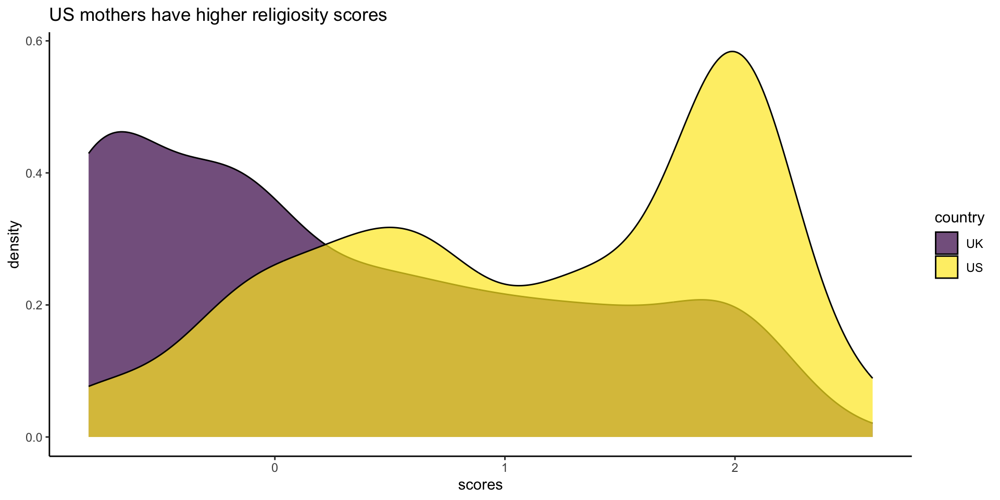Modelling with scores
Call:
lm(formula = births_adj ~ scores, data = relig_fitted)
Residuals:
Min 1Q Median 3Q Max
-1.7728 -0.6221 -0.1540 0.3965 7.1624
Coefficients:
Estimate Std. Error t value Pr(>|t|)
(Intercept) 8.627e-16 2.194e-02 0.000 1.00000
scores 5.692e-02 2.083e-02 2.732 0.00636 **
---
Signif. codes: 0 '***' 0.001 '**' 0.01 '*' 0.05 '.' 0.1 ' ' 1
Residual standard error: 0.8575 on 1526 degrees of freedom
Multiple R-squared: 0.004869, Adjusted R-squared: 0.004217
F-statistic: 7.466 on 1 and 1526 DF, p-value: 0.00636Modeling with scores
Call:
glm(formula = births_num ~ age + scores, family = poisson, data = relig_fitted)
Coefficients:
Estimate Std. Error z value Pr(>|z|)
(Intercept) -0.457564 0.121400 -3.769 0.000164 ***
age 0.030571 0.003593 8.509 < 2e-16 ***
scores 0.055908 0.018110 3.087 0.002021 **
---
Signif. codes: 0 '***' 0.001 '**' 0.01 '*' 0.05 '.' 0.1 ' ' 1
(Dispersion parameter for poisson family taken to be 1)
Null deviance: 639.03 on 1527 degrees of freedom
Residual deviance: 560.79 on 1525 degrees of freedom
AIC: 4217.3
Number of Fisher Scoring iterations: 4